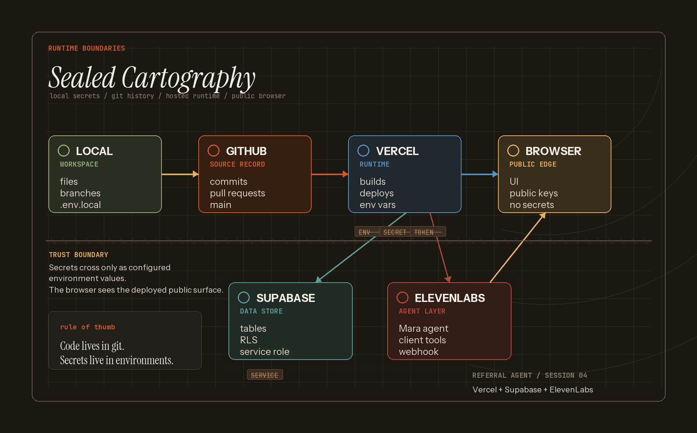

Referral agent app
A Next.js app with a public voice-first interview surface and an admin side for openings, interviews, candidates, trends, and skills.
Session 04 · May 26, 2026
Next.js · Vercel · Supabase · ElevenLabs · GitHub
This was the continuation session where the referral-agent idea became a real app shape: a public interview flow, an admin dashboard, Supabase-backed data, ElevenLabs agent configuration, Vercel project wiring, and a much sharper model of what lives locally, in GitHub, in hosting, and in runtime environments.
The raw human transcript and Claude Code session export were used as source material for this summary. They are not reproduced here; this page is the public learning record.
The main lesson: AI coding agents can build a lot of product surface quickly, but the important teaching work is understanding the handoff points: local files, commits, Vercel builds, environment variables, hosted services, webhooks, and browser-visible output.
A Next.js app with a public voice-first interview surface and an admin side for openings, interviews, candidates, trends, and skills.
Supabase schema and seed data, ElevenLabs agent/tool config, signed URL flow, webhook handling, and post-call structured extraction.
GitHub became the source record, Vercel became the hosted runtime, and Vercel Marketplace became the cleanest path for wiring Supabase config into the deployed project.
The session picked up from the prior plan-mode stop: build the referral agent as a real app, not just an architecture sketch.
Claude Code filled in the public interview flow and admin dashboard while Jake narrated the product shape and where each piece fits.
Supabase became the data layer, ElevenLabs became the agent layer, and the app gained signed URLs, webhook handling, post-call extraction, and admin review flows.
Vercel project setup, environment variables, GitHub commits, and deployment settings became the main infrastructure lesson. A key decision was creating Supabase through Vercel Marketplace so Vercel could become the control point for deployed config and local env pulls.
The work exposed the useful messy parts: Hobby-plan cron limits, BotID placement, signed-URL protection, placeholder webhook secrets, and what still needs live verification.
The app was substantially built, but the next teaching moment is the live deploy check: production branch, deployed URL, real webhook secret, and one full interview path.

Use this when explaining why code goes to GitHub, secrets go to environments, Vercel hosts the app, Supabase stores data, ElevenLabs runs the agent layer, and the browser only sees the deployed public surface.
{kind=link}